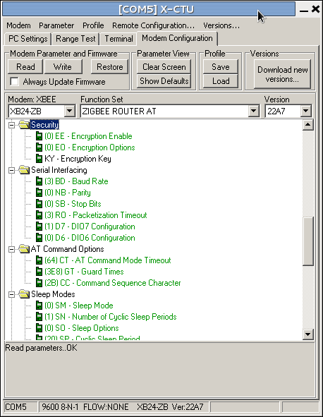

Posts about wireless
Ambient backscatter
An interesting article on how to power sensors and other "Internet of Things" devices.
A group at the University of Washington has developed a way of making use of "stray" radiation to power simple radio transmitters and receivers. Rather than use a dedicated power source, whether on-board like a battery or transmitted as in near-field communications, this technique makes use of the ambient radiation of cellphone signals, wifi networks and the like to provide enough power to energise a simple radio link.
Recycled Energy: Ambient Backscatter Allows Wireless Communications with no Batteries
If it works reliably, this'll be a huge contribution to low-power environmental sensing as well as to the applications the authors are targeting.
Radio survey
A simple radio survey establishes the ranges that the radios can manage.
The 2mW XBee radios we've got have a nominal range of 100m -- but that's in free air, with no obstructions like bushes, ditches, and houses, and not when enclosed in a plastic box to protect them from the elements. There's a reasonable chance that these obstacles will reduce the real range significantly.

A radio survey is fairly simple to accomplish. We load software that talks to a server on the base station -- something as simple as possible, like sending a single packet with a count every ten seconds -- and keep careful track of the return values coming back from the radio library. We then use the only output device we have -- an LED -- to indicate the success or failure of each operation, preferably with an indication of why it failed if it did. (Three flashes for unsuccessful transmission, five for no response received, and so forth.) We then walk away from the base station, watching the behaviour of the radio. When it starts to get errors, we've reached the edge of the effective range.
With two sensor motes, we can also check wireless mesh networking. If we place the first mote in range of the base station, we should then be able to walk further and have the second mote connect via the first, automatically. That's the theory, anyway...
(One extra thing to improve robustness: if the radios lose connection or get power-cycled, they can end up on a different radio channel to the co-ordinator. To prevent this, the radio needs to have an ATJV1 command issued to it. The easiest way to do this is at set-up, through the advanced settings in X-CTU.)
The results are fairly unsurprising. In an enclosure, in the field, with a base station inside a house (and so behind double glazing and suchlike) the effective range of the XBees is about 30--40m -- somewhat less than half the nominal range, and not really sufficient to reach the chosen science site: another 10--20m would be fine. On the other hand, the XBees mesh together seamlessly: taking a node out of range and placing another between it and the base station connects the network with no effort.
This is somewhat disappointing, but that's what this project is all about: the practicalities of sensor networking with cheap hardware.
There are several options to improve matters. A higher-powered radio would help: the 50mW XBee has a nominal range of 1km and so would be easily sufficient (and could probably be run at reduced transmission power). A router node halfway between base station and sensors could extend the network, and the cost of an additional non-sensing component. Better antennas on the 2mW radios might help too, especially if they could be placed outside the enclosure.
It's also worth noting that the radio segment is horrendously hard to debug with only a single LED for signalling. Adding more LEDs might help, but it's still a very poor debugging interface, even compared to printing status messages to the USB port.
API communications now working
A small sensor network now working, with two edge devices talking to a base station.

This step of the project accomplishes two things: is gets API networking mode working for the XBee radios, and makes sure the the interaction between software on the Arduinos and software running on the base station work too.
The data stream is simple enough: each Arduino counts up from 0 to 255 every 5s, passing the result up to the co-ordinator radio. A Processing program on the laptop collects the numbers and prints them. Naturally they become somewhat intertwined as their clocks aren't quite synchronised.
Actually this is enough to perform a simple radio survey to check transmission distance: we can move the radios away from the base station until they lose contact (nominally 100m for these 2mW radios, in reality probably substantially less), then move back into range, and then move one of the radios again to check that it meshes with the intermediate node in reaching back to the base station. This will also check that battery power works.

The software is quite straightforward, and the xbee-arduino library handles all the low-level communications -- although it's very low-level, fine for the experienced programmer but probably all but mystifying to anyone not used to this kind of software. The corresponding Java xbee-api library is slightly more friendly, but only slightly: they probably both need wrapping into a framework that hides the radio nastiness.
I think the biggest hurdle for this sort of system is the data format -- or, more precisely, the need (or desire, at least) to to use C at one end and Processing/Java at the other, which means that the data on the wire is being described twice. A framework approach could use (for example) JSON, although there'd still be a need to make sure it was compactly encoded and transmitted.
XBee firmware management with X-CTU
Managing Digi's XBee radio modules requires using their X-CTU package to upload the correct firmware. In this post we explain how.
This post is slightly depressing: not because it's on an unhappy topic, but because the effort and software needed to manage XBee radios is so complex to set up. In many ways this is just a function of the good design of the XBee: it's so minimal in terms of footprint and power consumption at run-time that it offloads a lot of work to external tools (and the user) at system build-time. But it's still a lot of work to get such a small piece of kit running.
X-CTU is intended to upload firmware to XBee radio modules. This is needed to change the firmware between router and co-ordinator of the Zigbee mesh network, and between the different protocol variants that the XBee radios can support.

One limitation of X-CTU is that it only works on Windows: if you're running Linux, X-CTU will run under Wine. You can download the latest X-CTU from Digi's X-CTU page; alternatively, there's a version installed on the Citizen Sensing VM.
To use X-CTU you need to connect your XBee module to your computer. The easiest way to do this is using an XBee USB breakout board, which provides an XBee socket and a USB socket. Insert the radio into the board, plug in a USB cable, and plug the other end into a USB socket. The light on the breakout board will then come on (see photograph above).

You next need to start up X-CTU and tell it where the XBee is. It hangs off a Windows COM port, and X-CTU will typically find it automatically. You should then be able to press the "Test/Query" button, and X-CTU will interrogate the XBee and display a small window showing some information about it, as shown in the screenshot on the right: the details don't matter, but this shows that the XBee is talking to the computer properly.

Assuming everything is now working correctly, the next step is to decide what firmware to download to the radio. Click on the "Modem configuration" tab, and then click the "Read" button: this reads the firmware that's on the XBee at the moment, and puts the details into the window. Typically this results in a display like that shown on the left. The important things to notice are the two drop-down boxes labelled "Function Set" and "Version". The function set is the description of the firmware, in which case indicating that the XBee is running Zigbee router firmware that responds to AT commands (more on this below).

To download a new firmware, we then select the function set and version we want to use. Suppose we want to make this XBee into the mesh co-ordinator. We change the function set to "Zigbee Coordinator AT" (keeping with Zigbee and the AT command set) in "Function set" the drop-down, then select the most recent version of this function set from the "Version" drop-down. (Versions are identified by hex numbers: the most recent in the screenshot right is "20A7", that being the highest hex number. Unfortunately X-CTU orders the numbers alphabetically, not in hex-numeric order.) Pressing "Write" will update the radio's firmware, and the radio is then ready for use as a co-ordinator.
If you look through the list of function sets, there will be quite a few options, including protocols other than Zigbee. These probably aren't worth too much exploration, but you'll also notice that there are Zigbee AT and API function sets corresponding to the two modes (transparent and API) that the XBee can support. Be sure to select the correct one for your application.
That's it: the radio is now ready for use.
Advanced use: setting optional parameters
There's one more thing that X-CTU can be used for: it can set parameters to the firmware function set, and this is sometimes important when using the radios.
When you've read the firmware from a radio, the main part of the X-CTU window contains a hierarchy of folders and cryptic values, for example "(4) PL - Power level". These are parameters that can be changed to modify the detailed behaviour of the radio. Some can also be set using AT commands. The example we used sets the radio's power level to 4. If you click on this, it will show a drop-down box giving other options. You might, for some applications, choose to reduce the radio power to 1 ("low") to save batteries. If you choose this and then write the firmware to the radio, the module will use this power setting.
In the example shown on the left, we're changing the AP parameter ("API enable") to 2, which is needed for the xbee-arduino library to work properly. If we now write the firmware (with the Zigbee co-ordinator API function set selected as shown), the radio will be ready for use.
XBee radios
The XBee is a series of small radio modules that implement the Zigbee protocol and work well with Arduinos.

XBees are made by Digi. The range includes a number of options: you almost certainly want some variant of the Zigbee range. The Series 2 (S2) modules seem to offer good performance, low power, and a useful range of functions. There are several different antenna types and two different radio powers (2mW and 50mW): larger power provides more range (1km nominal as opposed to 100m) at the cost of twenty-five times the power consumption: best avoided unless really needed. A collection of XBee modules co-operate to form a mesh network that's quite robust against partial failure, which makes them great for use in the field.
To get XBees working with an Arduino you need several pieces of hardware and software:
- Two or more radios (obvious, but surprisingly easy to only buy one...)
- One or more Arduinos
- One Arduino XBee shield for each radio-equipped Arduino
- One XBee USB breakout board
- The X-CTU firmware management software
When buying radios, buy them all the same series: the different series aren't guaranteed to interwork (although they often do). In the photograph above there are two different XBees: one with a patch antenna and one with a whip antenna.
The Xbee shield fits on top of the Arduino. They're sold without a radio module.
The breakout board is used to connect an XBee to the USB port of a computer, allowing your network to be accessed from the desktop. This is useful for debugging and for data logging, unless you're also going to build a dedicated data logger.
The X-CTU software manages the firmware on the radio module. Because the radios are small and low-power, they don't have room for a sophisticated software stack, and so aren't programmed in the normal way. Instead you download a firmware providing exactly the functions you need. Each network is given an identifier (a personal area network id or PAN) so that several networks can co-exist in the same area without interfering with each other. Each network has exactly one co-ordinator, with the others being routers, Co-ordinator and router use different firmware: you nominate one of your radios as co-ordinator (which will typically live on the base station, or on the data logger) and use X-CTU to load co-ordinator firmware to it; the other radios get router firmware and are placed onto the sensor motes.
XBees actually have two communication modes you can choose between, by choosing different firmware. The simplest is the AT firmware. These provide simple, text-based communications between radios: what one Arduino writes as text comes out on the other. In this mode the XBee also responds to Hayes AT commands, a standard way of controlling a modem (which is what an XBee technically is): we'll explore these commands in another post. This function set -- router and co-ordinator -- sets up what might be called a transparent network, in the sense that it behaves just like a serial pipe. This makes it easy to get things up and running.Text-based interaction isn't great for computer-to-computer communications, however, not least because of the effort (and memory) needed to understand text-based protocols. For this reason, the XBee also supports API function sets that provide binary communications. These are better for computers, and faster when running, but require more programming and more intellectual effort to understand. We'll deal with API communications in another post too.
We'll deal with the details of using X-CTU in another post, as well as explaining how to set up a simple network.